16 shots · 90 seconds · Measured final layout revision · Agent verification under delegated automation
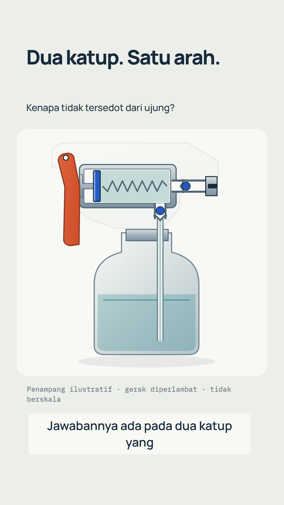
Kenapa tidak tersedot dari ujung?
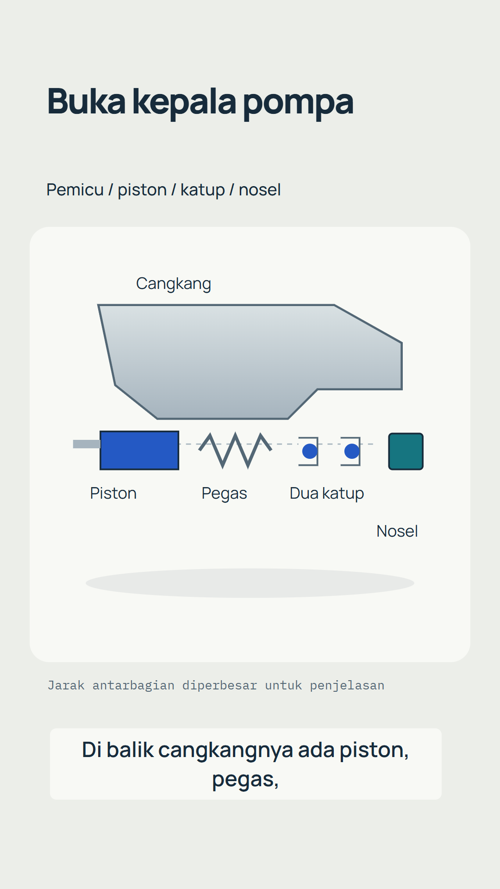
Pemicu / piston / katup / nosel
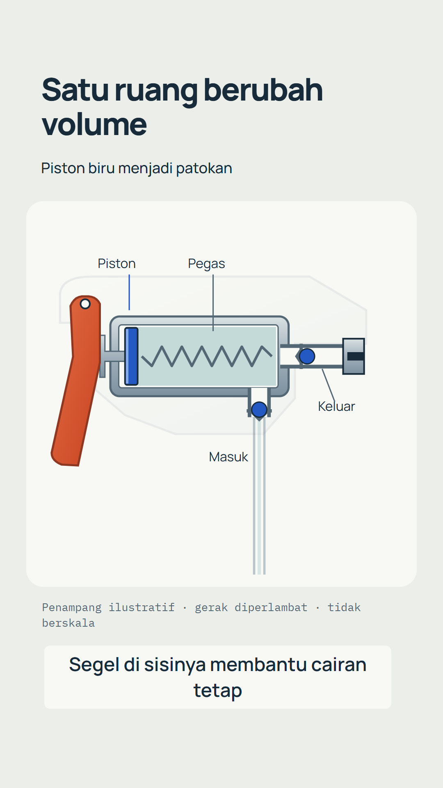
Piston biru menjadi patokan
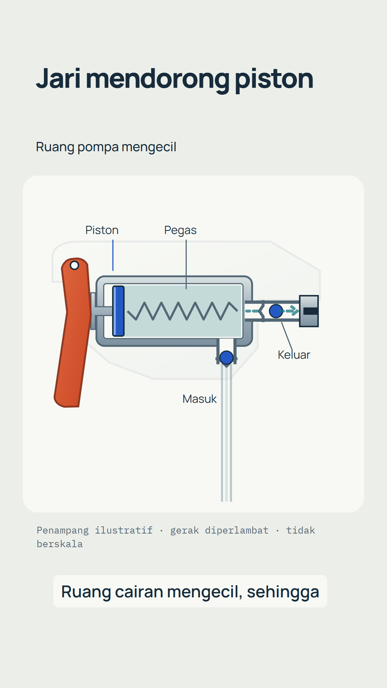
Ruang pompa mengecil
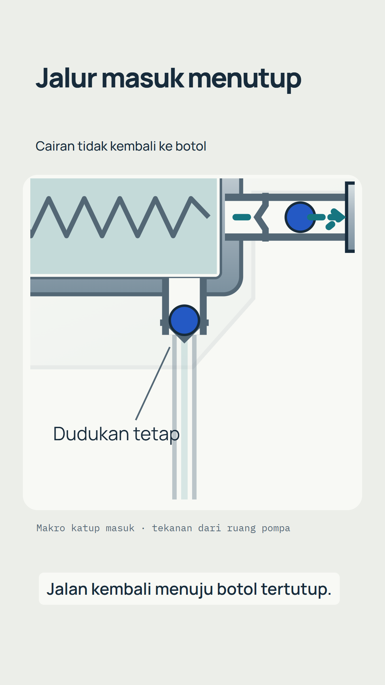
Cairan tidak kembali ke botol
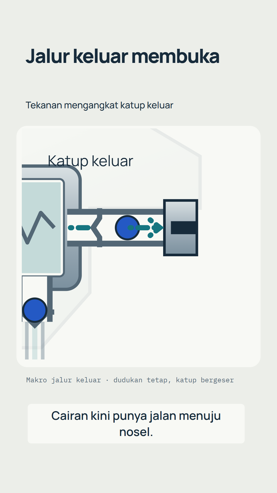
Tekanan mengangkat katup keluar
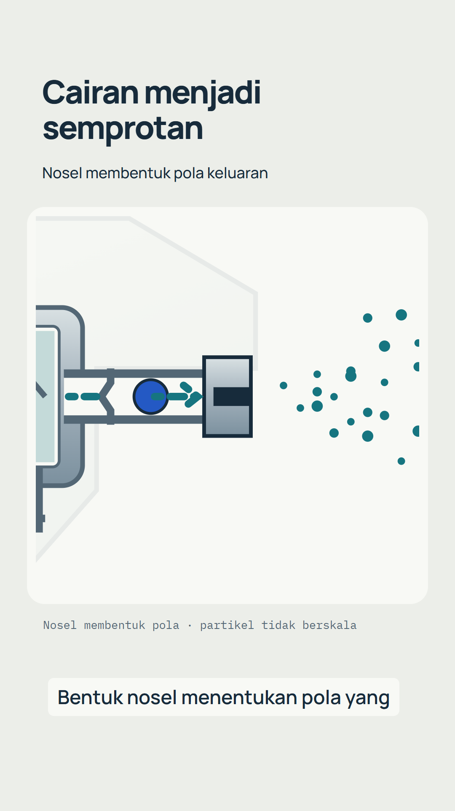
Nosel membentuk pola keluaran
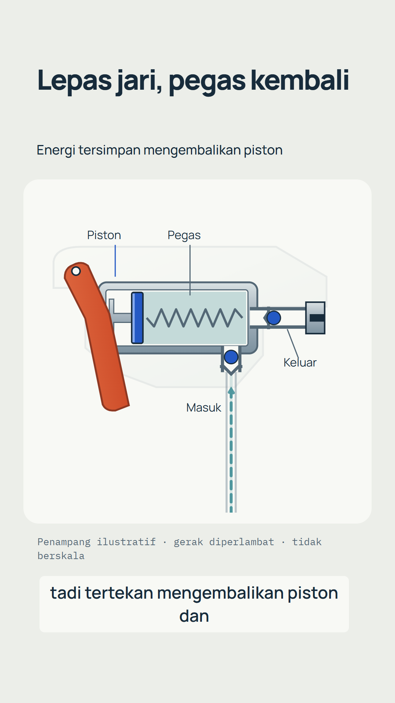
Energi tersimpan mengembalikan piston
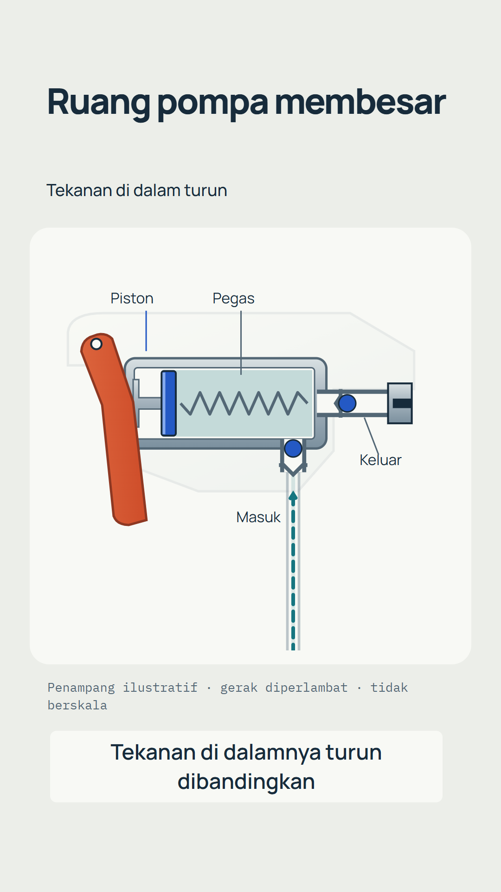
Tekanan di dalam turun
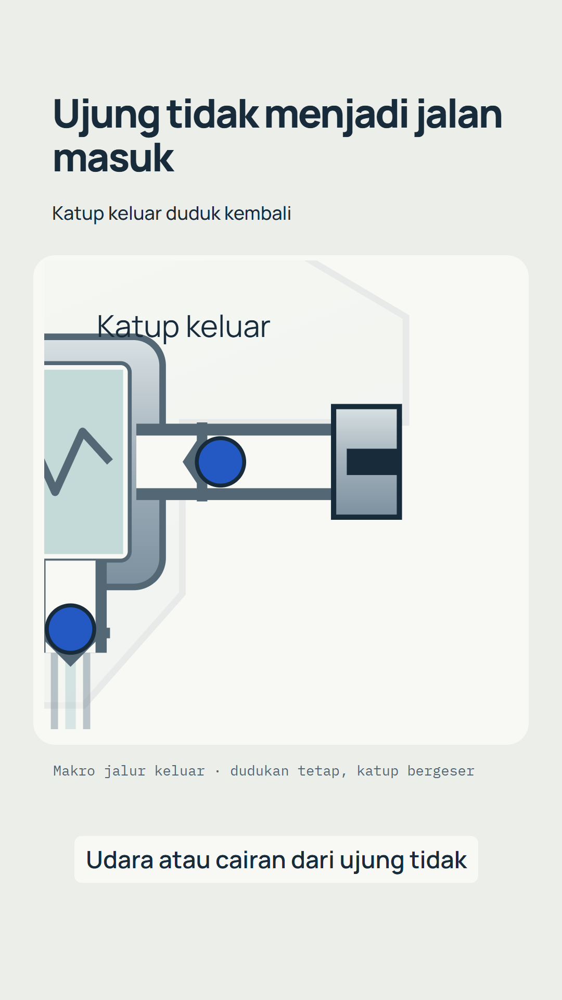
Katup keluar duduk kembali
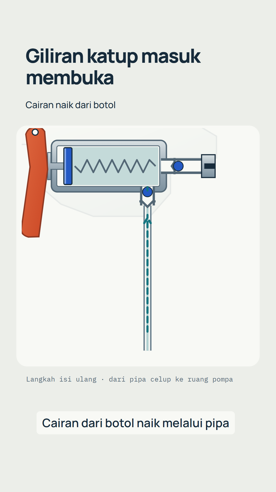
Cairan naik dari botol
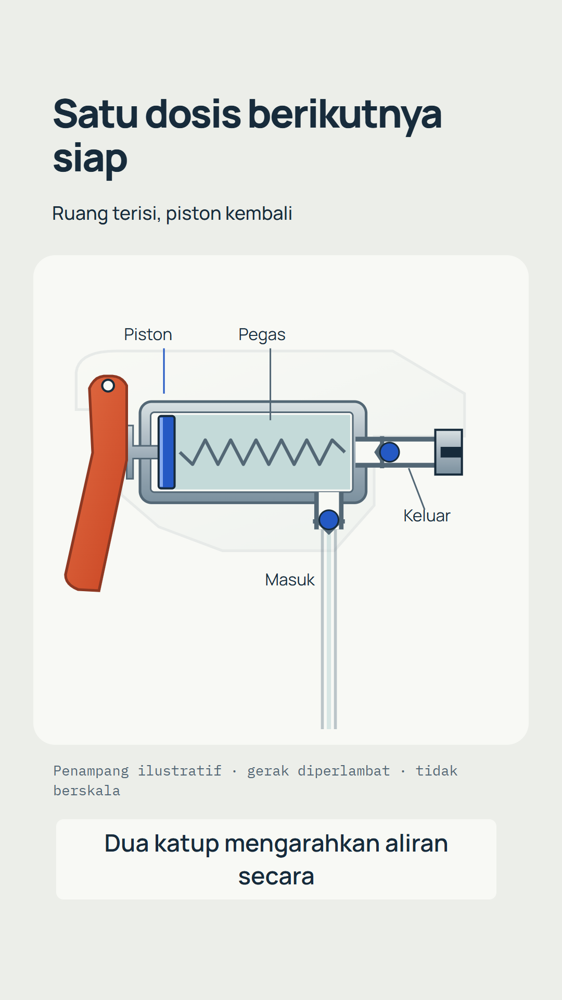
Ruang terisi, piston kembali
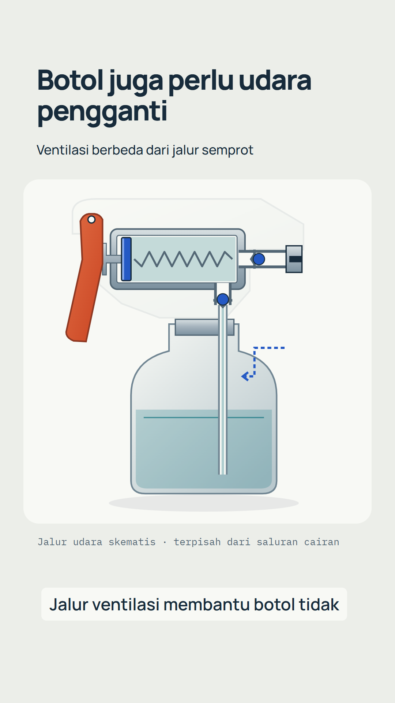
Ventilasi berbeda dari jalur semprot
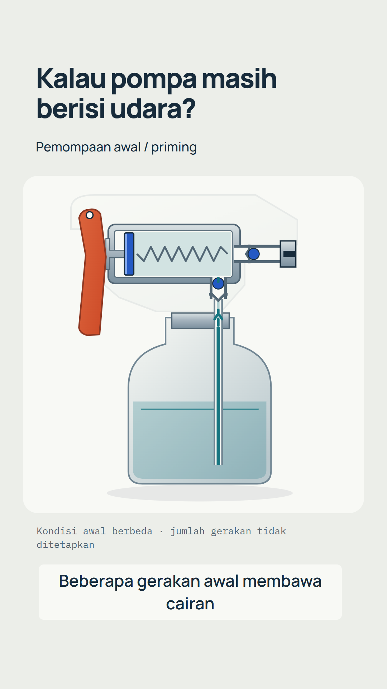
Pemompaan awal / priming
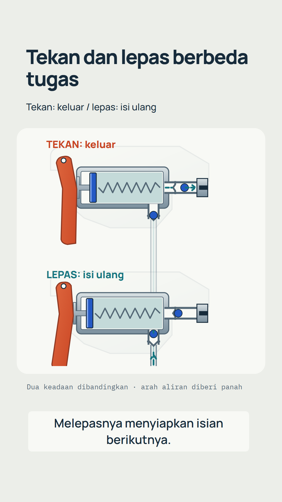
Tekan: keluar / lepas: isi ulang
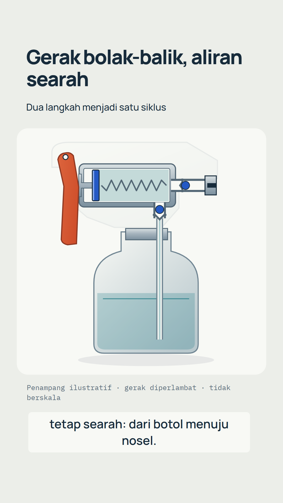
Dua langkah menjadi satu siklus